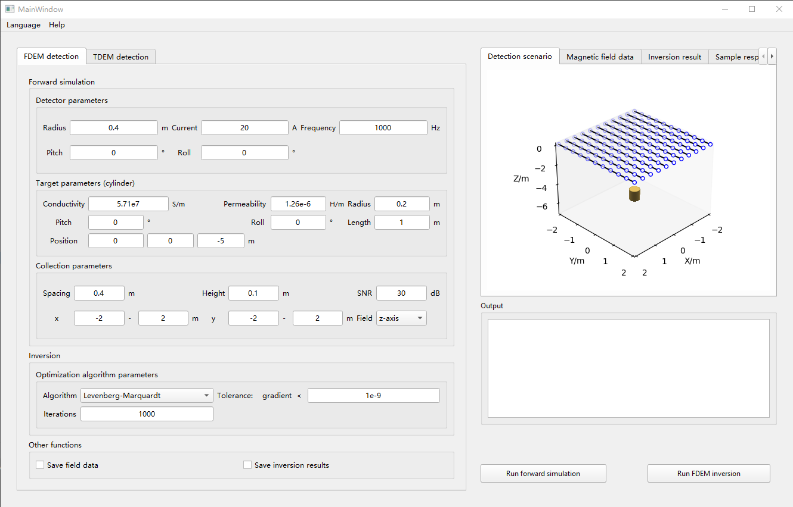

MicEMD
Welcome to MicEMD’s documentation!
Indices and tables
MicEMD
»
Welcome to MicEMD’s documentation!
View page source
Welcome to MicEMD’s documentation!
¶
# MicEMD Modeling, inversion and classification in electromagnetic detection Prerequisite: Installing Python and Conda Currently, MicEMD will run on Python 3.5, 3.6, 3.7 and 3.8. And MicEMD depends on some packages in Conda, so the Anaconda or Miniconda should be installed in your system. Installing Packages `conda install SimPEG --channel conda-forge` `conda install pyqt` Run MicEMD Then **run mainwindow.py in your python IDE or in command line:** `python mainwindow.py`
the GUI is as follows:

Indices and tables
¶
Index
Module Index
Search Page